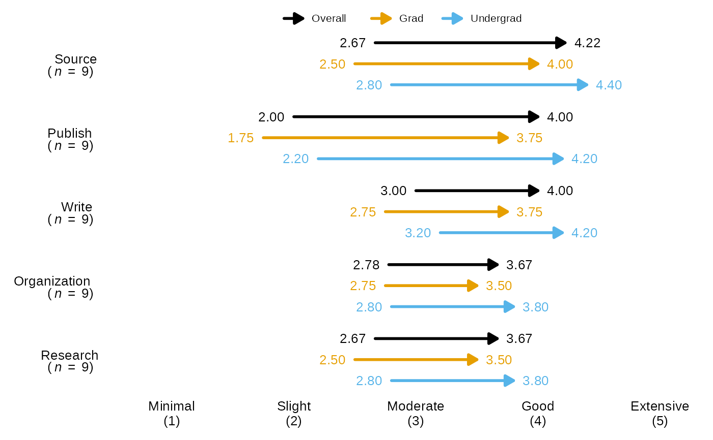
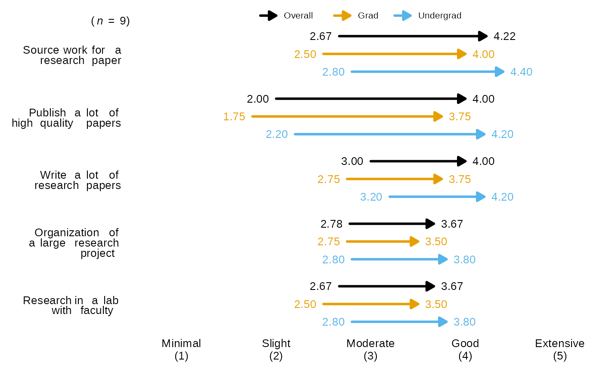
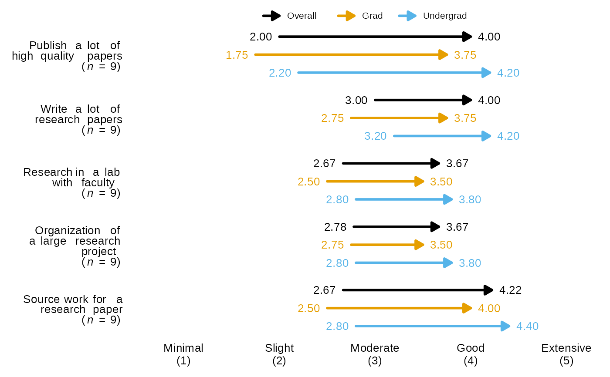

Arrow Chart by Group for Blackstone Research and Evaluation
Source:R/arrowChartGroup.R
arrowChartGroup.RdarrowChartGroup() creates an pre-post arrow chart of group averages and returns
a ggplot object.
Usage
arrowChartGroup(
df,
group,
scale_labels,
group_colors = NULL,
group_levels,
overall_n = TRUE,
question_labels = NULL,
question_order = FALSE,
font_family = "Arial",
font_size = 10
)Arguments
- df
Required, a tibble or data frame of numeric data that has items with the prefix of
pre_andpost_; and has a categorical group variable to split up the data (e.g. role, gender, education level, etc.).- group
Required, the name of the grouping variable in a quoted character string, e.g. "role", "gender", "edu_level", etc..
- scale_labels
Required, a character vector of labels for the response scale, must be in the desired order, e.g. if you have a 5 item scale of minimal to extensive it should look like this:
levels_min_ext <- c("Minimal", "Slight", "Moderate", "Good", "Extensive").- group_colors
Required, A character vector of hex codes for colors to associate each group supplied in the
group_levelsargument. to, e.g. if the data has two groups and this function creates an overall group so this function will need a 'group_colors' character vector of three colors.group_colorsneed to be in the order you want them associated to the group based on the factor levels for the group variable. Defaults to BRE custom qualitative palette and black is always the color for the "Overall" group.- group_levels
Required, a character vector of factor levels for the grouping variable, e.g. if the grouping variable is gender this could be: "male", "female", "non-binary".
- overall_n
Logical, default is TRUE. If TRUE, returns an overall n for all questions that is in the upper left tag of the plot. If False, adds n to each question/item after the respective labels.
- question_labels
Default is NULL. Takes in a named character vector to both supply labels the questions and sort the order of the questions. The named character vector should have the new labels as the "name" and the old labels as the "variable" sorted in the desired order of appearing in the plot, first item will appear at the top of the plot. See examples.
- question_order
Logical, default is FALSE. If TRUE, the question order will be taken from the user supplied named character vector passed to question_labels, where the first item will be at the top of the plot and so on. If FALSE, the question order will be the questions with highest post score average on the top of the plot descending.
- font_family
Character value to set the font family for all text in the chart, defaults to "Arial".
- font_size
Numeric value to set the font size in points for all text in the chart, defaults to size 10.
Value
A ggplot2 object that plots the items into a arrow bar chart.
Examples
items <- dplyr::tibble(
pre_Organization = c(1, 2, 3, 4, 5, 4, 3, 2, 1),
post_Organization = dplyr::if_else(pre_Organization < 5, pre_Organization + 1, pre_Organization),
pre_Source = c(2, 2, 3, 5, 4, 3, 2, 1, 2),
post_Source = dplyr::if_else(pre_Source < 4, pre_Source + 2, pre_Source),
pre_Publish = c(1, 1, 1, 2, 2, 2, 3, 3, 3),
post_Publish = pre_Publish + 2,
pre_Write = c(2, 2, 2, 3, 3, 3, 4, 4, 4),
post_Write = pre_Write + 1,
pre_Research = c(1, 1, 2, 2, 3, 3, 4, 4, 4),
post_Research = pre_Research + 1,
edu_level = factor(
c(
"grad", "undergrad", "grad", "undergrad", "grad",
"undergrad", "undergrad", "grad", "undergrad"
),
levels = c("grad", "undergrad")
)
)
# Labels for response scales to recode the numeric variables to on the plot:
levels_min_ext <- c("Minimal", "Slight", "Moderate", "Good", "Extensive")
# Question labels as a named vector with the naming structure
# like this: c("new label" = "original variable name"):
question_labels <- c("Publish a lot of high quality papers" = "Publish",
"Write a lot of research papers" = "Write",
"Research in a lab with faculty" = "Research",
"Organization of a large research project" = "Organization",
"Source work for a research paper" = "Source")
# Example grouped by the variable "edu_level", with n for each question and original labels:
arrowChartGroup(df = items, group = "edu_level", scale_labels = levels_min_ext,
group_levels = c("grad", "undergrad"), overall_n = FALSE,
question_labels = NULL, question_order = FALSE)

# With new labels, question_order = FALSE, and overall_n set to TRUE:
arrowChartGroup(df = items, group = "edu_level", scale_labels = levels_min_ext,
group_levels = c("grad", "undergrad"), overall_n = TRUE,
question_labels = question_labels, question_order = FALSE)

# With new labels and order taken from question_labels argument, and overall_n set to FALSE:
arrowChartGroup(df = items, group = "edu_level", scale_labels = levels_min_ext,
group_levels = c("grad", "undergrad"), overall_n = FALSE,
question_labels = question_labels, question_order = TRUE)
